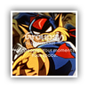

#19022 1 2008-01-30T03:39:14Z T3chno My old stuff
here. (When I used GIMP)
Spoiler: Series 1

OR
This was an ad for a English assignment: (All from scratch except for the stock images in the back)
Spoiler: Series 2

Spoiler: Series 3
Spoiler: Series 4

Spoiler: Series 5
Spoiler: Series 6

Spoiler: Series 7
-Done growing-
I'll post some new stuff later. Total sigs done ever: 77
#405459 2 2008-01-30T05:22:37Z Condog Nice stuff. ROAR!!!
#405591 3 2008-01-30T20:50:29Z T3chno Nice stuff. ROAR!!!
Heh, thanks.
[By the way, it's RAWR]
#405594 4 2008-01-30T20:56:06Z Zres You have moved to the dark side because they have cookies. ;_;
Nah, just kidding. Good PS stuffs here.
#405607 5 2008-01-30T21:36:51Z Chase Dude, why not just bump your old thread and edit your top post? Kind of needless time wasting here?

#405622 6 2008-01-30T22:24:23Z Weisslenny0 You have moved to the dark side because they have cookies. ;_;
We have cookies? Why do I not get cookies?
Cool pictures, I mus say. I like the 2nd one that you did for English.
#405644 7 2008-01-30T23:34:59Z Cossack the one below the dino is the coolest imo - but all are great. good gallery
#405648 8 2008-01-30T23:38:48Z T3chno You have moved to the dark side because they have cookies. ;_;
We have cookies? Why do I not get cookies?
Cool pictures, I mus say. I like the 2nd one that you did for English.
It's all one image.

the one below the dino is the coolest imo - but all are great. good gallery
Thanks!
#405764 9 2008-01-31T05:25:33Z Condog Nice stuff. ROAR!!!
Heh, thanks.
[By the way, it's RAWR]
Uh, roar, as in, Dinosaur!
#407075 10 2008-02-05T04:38:16Z T3chno Some more sigs:

#409051 11 2008-02-13T05:03:33Z T3chno As much as I'd hate to post twice in a row....
Marvel Sigs:

I'd love some comments. THese above all use somewhat of the same style because they're a set.
#409056 12 2008-02-13T05:22:19Z Condog Love the second and the third. You have awesome background, where do you get them/how do you make them?
#409059 13 2008-02-13T05:29:24Z T3chno Love the second and the third. You have awesome background, where do you get them/how do you make them?
Well...
Copy paste the layer with the original render in it several times so there's no white space shown.
Merge all layers except for original render.
Filters->Displace :: 3 times with 3 different PSDs, try to have the PSD's not have any text in them
Filter -> Ripple :: Default settings
Filter -> Zig Zag :: Default settings
Brush strokes -> Spatter :: Default settings.
Now you have that background like so:

#409061 14 2008-02-13T05:34:48Z Condog Love the second and the third. You have awesome background, where do you get them/how do you make them?
Well...
Copy paste the layer with the original render in it several times so there's no white space shown.
Merge all layers except for original render.
Filters->Displace :: 3 times with 3 different PSDs, try to have the PSD's not have any text in them
Filter -> Ripple :: Default settings
Filter -> Zig Zag :: Default settings
Brush strokes -> Spatter :: Default settings.
Now you have that background like so:
Ah, cool so it's spammed versions of the render with different effects making it look random.
Thanks a bunch, i really need better backgrounds.
#409069 15 2008-02-13T05:42:09Z T3chno
Ah, cool so it's spammed versions of the render with different effects making it look random.
Thanks a bunch, i really need better backgrounds.
Bingo. I don't use brushes any more. Other than 45 px soft white for lighting.
#409687 16 2008-02-15T12:55:01Z Commander *gasp* Potato?? you were practicly the only guy who could do cool stuff in gimp! (/me is trying to get potato

)
#409887 17 2008-02-16T04:37:26Z T3chno *gasp* Potato?? you were practicly the only guy who could do cool stuff in gimp! (/me is trying to get potato )
Eh, my GIMP stuff was just brushes and text. Not I'm actually trying different thing.
With that said:
Something experimental. Kinda.
And this:
[you've seen that^^]
Commentz?
#409889 18 2008-02-16T04:42:16Z Ignate All of these sigs are awesome.
...And the Spongebob avatar.
#409978 19 2008-02-16T20:19:34Z T3chno Thanks Ignate.

Okay, here:
A wallpaper set consisting of 7 abstract wallpapers.
But they're all 1440x900.

Hope you like them. They're mainly experimental off of tuts.
http://www.mediafire.com/download.php?dky2dmzbj1b#411760 20 2008-02-23T22:16:08Z T3chno Well. Some more sigs:
A wallpaper is spent
a lot of time on. About 1 hour and 40 minutes. Take or add a few.
http://washburn92.deviantart.com/art/Arrow-Reign-77600909#411844 21 2008-02-24T03:19:25Z geti wow, the wallpaper is fantastic. faved on dA.
nice use of difference if im not horibly mistaken.
the arrows fit well.
#411856 22 2008-02-24T05:15:56Z numa_ninja (guest) Wow. That purple nature sig is great! And the blue background is stunning! Pure greatness.

#413129 23 2008-03-01T19:48:08Z T3chno Thanks for the input.
More sigs!
^^Hate the way this turned out.
#413132 24 2008-03-01T19:57:38Z Pepi The one on top is nice, but the bottom one could use some improvement. I think a different starting image would be good, plus decrease the contrast between the background and the people. You need more color in it, I think.
#413187 25 2008-03-02T00:24:58Z Keron Cyst We should start a poll demanding that Raigan put that first pic. into his signature.
#413194 26 2008-03-02T01:04:32Z Zres We should start a poll demanding that Raigan put that first pic. into his signature.
Got that right. T3chno, your sigs serve me pwnsaus. I really like the water one.
#413203 27 2008-03-02T01:31:23Z T3chno Thanks guys, it means a lot coming from you.

It'd be awesome if I see Raigan using my sig. It would be.....AWESOME.

#416543 28 2008-03-13T17:00:00Z southpaw Make me a sig!
#416620 29 2008-03-13T22:32:23Z T3chno Make me a sig!
What colors? Render/Character?
#416627 30 2008-03-13T23:07:31Z Izzy Mewants cool sig too. If you bother to make it:
Render: Doraemon (a blue Japanese cat)
Text: Doraemon Size: 13; Font: Visitor , you know, the usual userbar/sigtag font with the 1 px stroke.
BTW, all of these are awrsome.
#416706 31 2008-03-14T04:19:42Z T3chno Mewants cool sig too. If you bother to make it:
Render: Doraemon (a blue Japanese cat)
Text: Doraemon Size: 13; Font: Visitor , you know, the usual userbar/sigtag font with the 1 px stroke.
BTW, all of these are awrsome.
Here ya go.

#416803 32 2008-03-14T16:03:45Z southpaw Make me a sig!
What colors? Render/Character?
I didn't say anything other than, "Make me a sig!"
It's entirely up to you.
#416810 33 2008-03-14T16:44:31Z Commander ... oopsies, wrong winow...........
heh
#416841 34 2008-03-14T20:11:36Z Izzy Mewants cool sig too. If you bother to make it:
Render: Doraemon (a blue Japanese cat)
Text: Doraemon Size: 13; Font: Visitor , you know, the usual userbar/sigtag font with the 1 px stroke.
BTW, all of these are awrsome.
Here ya go.
Thanks!
I feel...
")
T3chno cool.
#417322 35 2008-03-16T03:33:20Z T3chno Make me a sig!
What colors? Render/Character?
I didn't say anything other than, "Make me a sig!"
It's entirely up to you.
Learned a new technique with this.
#417338 36 2008-03-16T04:59:07Z southpaw Learned a new technique with this.
What technique would that be?
Also man, thanks for the sig. It looks delicious.
#417482 37 2008-03-16T17:28:17Z T3chno Learned a new technique with this.
What technique would that be?
Smudging techniques. (Thanks LV and Victimbf2 for pointing out chalk brushes and changing brush options).
#417486 38 2008-03-16T17:38:06Z Izzy T3chno, you are unofficially officially the new Photoshop Lord.
#417500 39 2008-03-16T18:24:41Z kkstrong0 If oyu want to try and dethrone Condog, make a better sig than the one I've got, same words, same theme. Everything else is up to you.
#417510 40 2008-03-16T19:29:59Z T3chno 
Condog, we should have a sig-off.
#417511 41 2008-03-16T19:30:50Z notkitt i like condogs better
#417512 42 2008-03-16T19:37:16Z southpaw Condog, we should have a sig-off.
You already did. It was called "The last 5 weeks of the Sig of the Week contest"
#417514 43 2008-03-16T19:38:21Z T3chno i like condogs better
I don't do 'toys.'
CONDOG.
ANOTHER SIG OFF. NOW.
#417520 44 2008-03-16T20:07:10Z incluye Me =

T3chno =

Make me a sig!Zorz!
#417533 45 2008-03-16T20:42:00Z Condog i like condogs better
I don't do 'toys.'
CONDOG. ANOTHER SIG OFF. NOW.
Heh, you want some more T3chno? Well, i just made a Super Mario Galaxy sig. Compare it to yours.
#417535 46 2008-03-16T20:45:01Z T3chno i like condogs better
I don't do 'toys.'
CONDOG. ANOTHER SIG OFF. NOW.
Heh, you want some more T3chno? Well, i just made a Super Mario Galaxy sig. Compare it to yours.
Pshaw. I want the
real thing. Not some gummi Mario.
")
Southpaw, make the competition thread.
#417555 47 2008-03-16T21:28:25Z southpaw Do you want a competition such as this one?
southpaw's old image contest#417556 48 2008-03-16T21:31:32Z T3chno Just a regular contest where you make a sigatar. No sig bars though. I'm having to do enough of them. >_>
#417629 49 2008-03-17T00:25:37Z T3chno #417633 50 2008-03-17T00:36:38Z southpaw #417656 51 2008-03-17T01:44:41Z incluye #418081 52 2008-03-18T00:30:19Z T3chno Some more sigs:
#418087 53 2008-03-18T00:36:41Z incluye 1. Quite nice, but very pale-ish. Font is brilliant.
2. Just looks messy. I don't like it, although others probably will.
#418999 54 2008-03-20T03:50:04Z T3chno
Anyone want this sig? Just experimenting with the pen brush and stuff.
#419108 55 2008-03-20T13:08:03Z incluye Cactaur....?
It would have been better to start with either a white or darker green background. I don't like that pale green. Everything else is great.
#419147 56 2008-03-20T15:07:46Z Ignate I'll comment on the 3 most recent sigs.
1. Looks nice, but I don't really like it compared to your others.
2. I like it for some reason, yeah.
3. It looks like something LV or 29403 would use. Nice.
#419457 57 2008-03-21T03:41:09Z T3chno Thanks for the input.
For notkitt (2 versions)
1.)
2.)
EDIT: Matching avvy:
#419462 58 2008-03-21T03:57:17Z notkitt hehe
i got a sig
hehe
#419861 59 2008-03-22T02:16:07Z T3chno New sigatar:
#419869 60 2008-03-22T02:33:12Z JetPack A request: Could you make me a sig to relate to portal? It would be really nice if you could.
#419883 61 2008-03-22T03:01:14Z T3chno A request: Could you make me a sig to relate to portal? It would be really nice if you could.
Here:
#419889 62 2008-03-22T03:13:04Z notkitt t3chno has a digimon sig, t3chno has a digimon sig
nice one for jetpack
#420012 63 2008-03-22T13:32:36Z incluye ARRRGGH T3H SMUDGZORZ I CAN'TZ DO IT
Nice work for JetPack. Very nice.
#420043 64 2008-03-22T14:37:52Z JetPack That's so cool T3chno.
Thanks!
#420059 65 2008-03-22T15:12:32Z Be_Happy_:) sweet stuff techno
#420302 66 2008-03-23T03:56:50Z T3chno No prob, JetPack.
Thanks, be_happy.
A new Digimon sig up for grabs!
#420398 67 2008-03-23T11:36:23Z squibbles YES!!!
I saw the one you are using, an was like:
Skullgreymon? Metal greymon ftw!!!
by the way...how are you doing those backgrounds...is it a variation of your old technique?
#420409 68 2008-03-23T12:00:53Z Guy_Zap Guy_Zap need sig!
Any chance of an N one with G_Z in the corner like my current one?
#420461 69 2008-03-23T14:42:45Z Be_Happy_:) MAKE ME A SIGGY!!!!
#420561 70 2008-03-23T18:40:02Z southpaw Guy_Zap need sig!
Any chance of an N one with G_Z in the corner like my current one?
Name in corner is boring. T3chno know this. southpaw know this. Trust in T3chno, your name will work well within sig. Good talk.
#420566 71 2008-03-23T19:02:18Z T3chno by the way...how are you doing those backgrounds...is it a variation of your old technique?
Yep. Variations on smudging.
Sigs Pending:
Guy_Zap
Be_Happy
#420598 72 2008-03-23T20:11:31Z incluye I will figure out how to smudge correctly if it's the last thing I do.
Nice work. I supposed you like your Digimon sigs.
#420738 73 2008-03-23T23:40:27Z Be_Happy_:) Sweet I GET A NEW SIGGY!!!!!

#420749 74 2008-03-23T23:51:12Z Pepi The digimon ones are pretty cool.
#420791 75 2008-03-24T00:39:20Z Be_Happy_:) ya it is!
#421040 76 2008-03-24T15:39:16Z incluye
How did you manage the curvy lines in the background?
#421114 77 2008-03-24T19:48:29Z Izzy According to his tut, it's probably a C4D render.[/methinks]
#421151 78 2008-03-24T21:28:06Z incluye CD render?
#421152 79 2008-03-24T21:29:56Z Izzy I meant C4D. *edits*
#421221 80 2008-03-24T23:40:41Z T3chno Yes, it's a C4D render set onto Hard Light duplicated a few times and one of them is blurred and another as a filter on it. (I forgot which).
#421281 81 2008-03-25T01:20:18Z notkitt dude t3chno, i just remembered what your sig was
I USED TO HAVE THE TOY OF IT!!!
my fav digimon
#421540 82 2008-03-25T21:30:25Z Be_Happy_:) by any chance you haven't started my sig yet i would like it to have something
too do with a drumset
#421629 83 2008-03-25T23:52:36Z incluye Be_Happy, I could do your sig if you wish.
#421636 84 2008-03-26T00:10:06Z Izzy How do you do the smudging????/?/?
#421641 85 2008-03-26T00:19:01Z T3chno Be_Happy, I could do your sig if you wish.
HAY I'M ALMOST DONE WITH IT.
Anyways, what specs on the N sig, Guy_Zap?
#421651 86 2008-03-26T00:49:07Z Be_Happy_:) Be_Happy, I could do your sig if you wish.
you can do one too
i would like that a lot
Wait techno, are you doing it with a drum set thing
#421657 87 2008-03-26T01:00:04Z T3chno Be_Happy, I could do your sig if you wish.
you can do one too
i would like that a lot
Wait techno, are you doing it with a drum set thing
How's this:
#421662 88 2008-03-26T01:07:15Z Be_Happy_:) effing aswome!!!!!
and incluye you could make me an avatar or
to go with or you can make another siggy
either would be appreciated.
#421868 89 2008-03-26T15:47:58Z Guy_Zap Specs?
#422020 90 2008-03-26T23:14:34Z T3chno Specs?
How do you want your sig to look like?
#422031 91 2008-03-26T23:27:49Z JetPack That's some nice stuff, T3chno.
#422745 92 2008-03-28T15:47:42Z Guy_Zap I dunno, just something N with G_Z on. Cool effects are good, btw.
#422942 93 2008-03-29T02:17:36Z T3chno Okay, here guy_zap:
And here's something I did that was purely experimental. I don't really like it.
#422950 94 2008-03-29T02:52:45Z incluye Hmm, me neither. What were you experimenting?
#422956 95 2008-03-29T03:07:10Z T3chno Hmm, me neither. What were you experimenting?
Trying out some smudging + shape tools.
#423052 96 2008-03-29T07:59:27Z Guy_Zap Graaar! It wont come up cos I got Parental Controls on! Now I have to wait for my stepdad to wake up so I can get his password...
EDIT: I got it! Luv it, very good.
#423888 97 2008-03-31T12:12:45Z Be_Happy_:) interest experiment hmm....
#424128 98 2008-04-01T03:27:40Z T3chno This was going to be my entry for Portfolio, until I decided I hated it.
#425355 99 2008-04-05T17:30:21Z T3chno Recent stuff:
^For Portfolio
Haven't done a whole lot in the past month.
EDIT: New one
#425394 100 2008-04-05T19:30:05Z incluye Woah.
That's quite a border. How did you make it?
#425397 101 2008-04-05T19:33:13Z T3chno Woah.
That's quite a border. How did you make it?
Looky:
Attachment (lost): post-20-1207423993.jpg
#426445 102 2008-04-09T00:36:46Z golfkid Can you make a sig for me please? I would like one of a wolf running, in profile. The backgroud is up to you. I just thought you did a really good job with the wolf one you had a few weeks ago. Everything you've posted here has been excellent to my eyes.
#426645 103 2008-04-09T21:13:51Z T3chno
New one.
I'll get to work on yours golfkid.
#426650 104 2008-04-09T21:20:51Z Be_Happy_:) AHHH!!! Im scared (but still happy
)
#426655 105 2008-04-09T21:40:11Z T3chno Whoever can reference what that render is from will win a virtual cookie.
#426660 106 2008-04-09T21:46:41Z Condog King Kong perhaps?
#426661 107 2008-04-09T21:46:45Z Izzy The internet, DUH[/stupid joke]
I don't know.
#426673 108 2008-04-09T22:11:49Z Heartattack if you could slap heartattack on the kingdom hearts one i might be inclined to use it. in time
#426691 109 2008-04-10T00:00:08Z golfkid I'll get to work on yours golfkid.
Awesome. Thanks!
#427194 110 2008-04-11T19:01:48Z T3chno Well here's the Mario set:
#427205 111 2008-04-11T19:32:15Z Guy_Zap I like the mario ones!
#427327 112 2008-04-12T02:22:38Z T3chno GUYS I MADE A ZUNE FROM SCRATCH.
#428546 113 2008-04-15T01:15:17Z golfkid I'm curious, what do you do with all those extra sigs that you make but don't ever use?
#428943 114 2008-04-16T03:45:03Z T3chno I'm curious, what do you do with all those extra sigs that you make but don't ever use?
I store them away for the winter.
#429008 115 2008-04-16T12:22:58Z ska Wow! You have some serious talent!
I even managed to convert one of your images for myself to use as a signature!!
#429495 116 2008-04-18T02:39:22Z T3chno Wow! You have some serious talent!
I even managed to convert one of your images for myself to use as a signature!!
Thanks Ska.
I'd give you the PSD, but I made that sig when I got Photoshop that week and never saved anything as a PSD, only png. D:
Recently, I've gotten interested in Web designs. I'm not good yet, but I think it's a start. Here's the 4 layouts I've made so far in chronological order:
1.)
Splash Tree
2.)
Simple Sky
3.)
Mario Galaxy HQ
4.)
Traffik Jam#429497 117 2008-04-18T02:46:55Z Condog Wow, those are pretty sweet. I like the last one the most.
#429498 118 2008-04-18T02:50:49Z T3chno Wow, those are pretty sweet. I like the last one the most.
Thanks.
Now to learn how to code them.
/stares at sky
#429547 119 2008-04-18T11:55:59Z Commander If you ever need help if you get a web site *whistles* *coughpmmecough*
#429586 120 2008-04-18T18:16:46Z Izzy #429827 121 2008-04-19T11:29:49Z Be_Happy_:) Wow
That Zune thing looks realy good
. And you made it from scratch!!
#430104 122 2008-04-20T04:38:33Z T3chno Thanks.
NUMA Refresh Grey
My soon-to-be entry for NUMA. I'm working on the main text and some final adjustments. Working on another entry too.
#430121 123 2008-04-20T06:42:15Z Bunniesandsheep Thanks.
NUMA Refresh Grey
My soon-to-be entry for NUMA. I'm working on the main text and some final adjustments. Working on another entry too.
OMG
That is serious competition.
#430129 124 2008-04-20T07:12:28Z southpaw T3chno:
YOUR ZUNE PHAILURE AND YOURE DESIGN =/= SUCCESSFUL.
YOURE AN ANGREE ARMADAILLO.
SINCERRRRRRLY,
-southpaw-
#430152 125 2008-04-20T10:49:32Z Be_Happy_:) Thanks.
NUMA Refresh Grey
My soon-to-be entry for NUMA. I'm working on the main text and some final adjustments. Working on another entry too.
You better hurry up submissions end soon!
#430187 126 2008-04-20T13:09:07Z spoon Some more sigs:
Could you make something like that, but have the KHII sora in it too? With the Kingdom Key by the way.
Sorry southpaw. I like this sig, and it's in my collection of favorites. Well, actually, it's the FIRST in my collection of favorites. And as you know, I love to alternate my sigs every once in a while.
And I LOVE your new design for NUMA.
#430250 127 2008-04-20T16:30:44Z T3chno #430267 128 2008-04-20T18:05:50Z Be_Happy_:) Hey t3chno really nice design for numa! good luck in the contest
#430269 129 2008-04-20T18:17:01Z T3chno Hey t3chno really nice design for numa! good luck in the contest
Thanks.
In case anyone missed it, this was my first submission:
http://washburn92.deviantart.com/art/NUMA-...-REMIX-83394496#430276 130 2008-04-20T18:44:37Z Be_Happy_:) I like the number of comments thing
#430307 131 2008-04-20T20:23:33Z spoon T3chno:
YOUR ZUNE PHAILURE AND YOURE DESIGN =/= SUCCESSFUL.
YOURE AN ANGREE ARMADAILLO.
SINCERRRRRRLY,
-southpaw-
;_;
I'm taking you off my buddy list in the PMs. That leaves one person on there. 
@Spoon, I don't even rememver how I made that. But I think I still have the PSD for it. I'll give it a try.
I think he's just mad cause I'm taking off his sig
.
And, it's ok. I'm not THAT in need of a sig, so don't do it if you don't want to..
And if you've got the time, you should open a sig shop.
#430999 132 2008-04-23T03:26:41Z golfkid Hey T3chno, how's my sig coming along? If you don't have time to work on it right now, that's fine. I'd just like a status update.
#431155 133 2008-04-23T22:56:52Z The_Muffin_Man Could you make me a sig?
Colors:Orange and darker pink
Backround:Some sort of funky design
Pictures:Piano Keys maybe some music notes
Text:Cluster Funk
Font:stencil like
That would be cool.
#446558 134 2008-06-19T22:45:21Z T3chno Two images I made today. I know the sig sucks, I forgot where some stuff was.
Cloud Wallpaper#446736 135 2008-06-20T12:04:57Z Be_Happy_:) Do you think you could make a Mario cart wall paper t3chno?
#446777 136 2008-06-20T14:39:09Z spoon Wow, this topic was revived after what? Two months?
...
Oh shnap! T3chno, I thought you left us. Glad to see you're back. I love the cloud wallpaper, but the sig...eh.
#446805 137 2008-06-20T18:04:24Z T3chno Do you think you could make a Mario cart wall paper t3chno?
What dimensions?
Simple/Complex?
Character? (Just Mario, or someone else.)
#446818 138 2008-06-20T19:09:48Z Be_Happy_:) People:Mario+yoshi+Luigi+Peach.
Dementions:1024x768
I don't really want it to be that complex. I like simple backrounds. I also don't want it to be dark.
#446840 139 2008-06-20T19:59:49Z T3chno I'll get to work on it.
Check out this new wallpaper I made:
More Clouds
Some of you Photoshop users may have seen it before.
#446844 140 2008-06-20T20:04:22Z Be_Happy_:) I like how the background looks. The clouds however look a little blurry. Overall nice.
#446846 141 2008-06-20T20:07:05Z spoon I like how the background looks. The clouds however look a little blurry. Overall nice.
I think that was intentional.
Any way, I really like the clouds, so it's now my desktop wall.
#446848 142 2008-06-20T20:08:26Z T3chno I like how the background looks. The clouds however look a little blurry. Overall nice.
I think that was intentional.
Any way, I really like the clouds, so it's now my desktop wall.
Yeah, the blur was intentional. It gives the clouds a soft feel.
#447122 143 2008-06-21T18:29:18Z T3chno Almost done on your Mario Kart wallpaper.
And here's my best signature that I've ever made.
Yes.
#447166 144 2008-06-21T21:14:12Z Izzy DUDE, that is SICK!! Bumblebee could be blended in a teeny-weeny bit more.
#447172 145 2008-06-21T21:18:11Z T3chno Thanks, here's Optimus Prime.
Blended, much, much more.
#447173 146 2008-06-21T21:21:15Z Be_Happy_:) Thanks, here's Optimus Prime.
Blended, much, much more.
Bumblebee one is better! 11/10!!! Insane dude.
#447182 147 2008-06-21T21:30:34Z Heartattack Yay T3chno's back!!! Yay Transformers!!! Yay T3chno's really good!!!
#447468 148 2008-06-22T15:48:09Z spoon I like how the background looks. The clouds however look a little blurry. Overall nice.
I think that was intentional.
Any way, I really like the clouds, so it's now my desktop wall.
Yeah, the blur was intentional. It gives the clouds a soft feel.
I agree.
Yay T3chno's back!!! Yay Transformers!!! Yay T3chno's really good!!!
I agree as well.
Could you make me a wall too? I need it 1152 x 864 for my mom's new comp/monitor setup. Plus, all of the default wallpapers suck. Badly.
#447554 149 2008-06-22T20:51:26Z Heartattack Yay spoon agrees a lot!!!!
#447667 150 2008-06-22T22:58:44Z T3chno
Could you make me a wall too? I need it 1152 x 864 for my mom's new comp/monitor setup. Plus, all of the default wallpapers suck. Badly.
What kind? Same criteria listed above?
#447736 151 2008-06-23T01:58:22Z Be_Happy_:) T3chno are you almost done with mine. It's been a while.
#448269 152 2008-06-24T18:53:27Z T3chno #448315 153 2008-06-24T21:19:57Z Be_Happy_:) Nice dude. 14/10. Amazingly good work.
#448345 154 2008-06-24T22:37:19Z Heartattack 
You made that? It looks so... official. Officially awesome, anyway.
#448774 155 2008-06-26T04:28:17Z T3chno Two more.
and
^My favorite sig I've ever made.
#448789 156 2008-06-26T05:18:13Z notkitt what is that like a microscoope...oh its spiderman.
^My thoughts^
eh, the spiderman one isn't that awesome. i like the background but not really the color.
#448821 157 2008-06-26T10:30:26Z Be_Happy_:) The spiderman one need a better border, and some more color.
#448831 158 2008-06-26T12:35:56Z incluye I agree.
#448988 159 2008-06-27T02:33:51Z Heartattack It'd be better if it was in color.
#449159 160 2008-06-27T21:03:19Z T3chno
This sig is dedicated to all the ponies out there.
#449172 161 2008-06-27T22:25:28Z Izzy Woah, that sig is awesome.
*is blinded by its awesomeness*
#450021 162 2008-07-01T20:05:44Z T3chno
New one. There's a white border.
#450040 163 2008-07-01T20:59:21Z incluye The font is terrible, and there's a bit too much black space on the right. The smudging, though, is fantastic. 6/10
#450089 164 2008-07-02T01:39:32Z T3chno The font is terrible, and there's a bit too much black space on the right. The smudging, though, is fantastic. 6/10
The font is similar to the one used by Washburn guitars. Kinda. Okay, I know it's a Strat, so what. Sue me.
#450218 165 2008-07-02T16:52:18Z T3chno Another one I made yesterday.
#450226 166 2008-07-02T17:11:52Z incluye Totally bizarre.
#450237 167 2008-07-02T17:43:15Z Heartattack Totally awesome. It would be cool if it was fotf's sig.
#451739 168 2008-07-09T02:36:02Z T3chno Okay, me and my friend are starting up a design site. Well, it's called Two Leaf Designs.
We're creating numerous designs and choosing one as the main one we're going to choose.
http://twoleafdesigns.deviantart.com/art/Reignbowz-91104785
That's the first on it.
#451869 169 2008-07-09T20:41:27Z T3chno 2 New Sigs:
^The stock was horrible quality.
#451887 170 2008-07-09T21:45:34Z Eiturlyf Metal of Honor sig is INSANELY GOOD.
The other one..

#451907 171 2008-07-09T23:53:34Z incluye QFE'd Be_Happy. The other one is just...weird.
#451954 172 2008-07-10T02:22:22Z Heartattack The two leaf design thing is really cool looking. The sigs I don't like so much, though.
#452024 173 2008-07-10T11:00:18Z spoon I pretty much agree with everyone else here. The design for the site is good, the Medal of Honor one is better, and that other sig is just
#453065 174 2008-07-15T20:04:14Z T3chno New one. Just trying out some new stuff.
#453072 175 2008-07-15T20:31:29Z incluye The duplicate on the right is a bit...corny. The blue thing wrapped around him isn't so flattering, but the sig itself is very well made, especially the color-adjusted border.
#453432 176 2008-07-17T18:34:21Z T3chno
I don't like it.
#453464 177 2008-07-17T21:35:06Z incluye That makes one of us.
#453473 178 2008-07-17T22:44:32Z spoon New one. Just trying out some new stuff.
OH GOD. That's really good, except for the duplicated on the right. PLEASE make another pne like it, just ithout that thing. I also agree with incluye on the Guitar sig.
#453716 179 2008-07-18T23:53:24Z T3chno Which one?
Or
#453717 180 2008-07-18T23:56:06Z Be_Happy_:) 2nd one.
the first one has too much color.
#453719 181 2008-07-19T00:03:30Z T3chno 2nd one.
the first one has too much color.
The background is black and white. And you only see variations of yellow and green I think (I'm colorblind)? But you don't see tons of red and purple being poured in there or something. BUt I see what you mean. The problem is that it's quite large.
#453851 182 2008-07-19T16:52:46Z spoon Bah. I'm to lazy to wade through 6 pages of posts to fnd your images, no matter how good they are. You should edit all of the new ones into the first post, for our wiewing pleasure. It's ok if you don't, though.
Also, how did you make all of those cool things in GIMP? I know you don't use it any more, but if you still remember, PLEASE tell me.
#453879 183 2008-07-19T18:30:16Z T3chno The GIMP stuff?
Brush all on one layer. A solid color or gradient in the next layer. Set to overlay. Add text. Done.
EDIT:
Go ahead, anyone can use it.
#453941 184 2008-07-20T00:59:19Z T3chno Okay guys, one of my favorite wallpapers ever that I've made@!@!
http://washburn92.deviantart.com/art/Audio-Cactuar-92206267
Also, I'll edit my first post for easier access to the images I've made.
#453965 185 2008-07-20T03:31:05Z epigone Okay guys, one of my favorite wallpapers ever that I've made@!@!
http://washburn92.deviantart.com/art/Audio-Cactuar-92206267
Also, I'll edit my first post for easier access to the images I've made.
Commented on your devART page... this one is awesome.
#454021 186 2008-07-20T12:37:08Z Be_Happy_:) You have time to make wallpapers but you don't have time to make my sig?
#455883 187 2008-07-29T20:42:12Z T3chno Um, here's your sig then. You told me to make a sig with your name on it. It stinks on ice. I know.
#456101 188 2008-07-30T12:14:03Z RN I'm using one of the images from the first post in my sig, hopefully that's okay.
#456117 189 2008-07-30T13:02:54Z Be_Happy_:) Um, here's your sig then. You told me to make a sig with your name on it. It stinks on ice. I know.
Yes I did ask you to but after the first week in a half I though you gave up on it.
#456270 190 2008-07-30T18:02:47Z T3chno Okay, fine. Don't ask me to make you a sig next time. >:-|
Well, here's a new one.
#456468 191 2008-07-31T01:17:45Z RN I've claimed T3chno's new onee, I like it better.
#456474 192 2008-07-31T01:25:20Z T3chno You know, if you want, I could just put your name on it.
Here:
#456475 193 2008-07-31T01:33:48Z kayix Whos better, T3chno or Izzy...
Sig with Smash Ball Yoshi in a colour other than green please and thanx
#456521 194 2008-07-31T03:46:44Z >stardeash Whos better, T3chno or Izzy...
Sig with Smash Ball Yoshi in a colour other than green please and thanx
I likes izzy but t3ch rocks as well, thats a tough one. Also, didn't you just get THAT siggy kayix?
#456605 195 2008-07-31T11:15:22Z Be_Happy_:) Whos better, T3chno or Izzy...
I say t3chno hands down.
No offense Izzy.
#456612 196 2008-07-31T11:53:47Z Eiturlyf I vote for myself.
#456627 197 2008-07-31T13:32:37Z RN I vote for T3chno, but Izzy and Eiturlyf are pretty good too.
Finally I get a sig with my name on it! W00t!
50th post! Alright, Advanced Membership!
#456667 198 2008-07-31T15:42:24Z kayix *Adds Incluyde and Eiturlyf*
Edit:Fogot the asterisk.(*)
#456708 199 2008-07-31T17:21:19Z T3chno Whos better, T3chno or Izzy...
Sig with Smash Ball Yoshi in a colour other than green please and thanx
Ball Yoshi? I don't know what that is, so can I just use regular Yoshi. It'll be just as awesome.
And look what my thread has become.

EDIT: Here. I'll make one that has a variety of colors if you want. I like these monotone types. :]
#456897 200 2008-08-01T00:54:46Z T3chno Here's a new 1440x900 wallpaper I made. It has Link in it. So it's automatically good.
http://washburn92.deviantart.com/art/Link-s-Strike-93421606#456942 201 2008-08-01T02:36:14Z >stardeash I love the desktop dude. I also like the monotone colored yoshi sig.
#457178 202 2008-08-01T17:40:20Z T3chno I love the desktop dude. I also like the monotone colored yoshi sig.
Thanks!
Here's another:
Also, first post updated.
#457361 203 2008-08-01T23:09:37Z Be_Happy_:) Yay for Luigi!
Not your best but me likes it.
#457406 204 2008-08-02T01:34:18Z incluye You have surprisingly good color sense for a colorblind person.
#457410 205 2008-08-02T01:51:28Z Weisslenny0 You have surprisingly good color sense for a colorblind person.
He's colourblind? O_O_O
Wow.
Awesome anyways.
#457411 206 2008-08-02T01:52:45Z incluye The background is black and white. And you only see variations of yellow and green I think (I'm colorblind)?
#458407 207 2008-08-05T05:43:36Z T3chno Yeah, I have red-green colorblindness. Can't tell the difference between blue and purple, green and brown (sometimes), red and green.
Believe it or not, the focus in this sig is a car. Doesn't look much like one, so consider this an abstract sig instead.
#458500 208 2008-08-05T16:14:46Z Izzy I didn't notice there was a car there when I first saw it, but now I see the headlight.
#458548 209 2008-08-05T20:01:48Z incluye That sig is 100% Awesome Sauce. On Awesome Rotini. In an Awesome Plate. At an Awesome Restaurant.
I want it.
#458586 210 2008-08-05T22:48:52Z Be_Happy_:) I agree with incluye. Solid work

.
#458601 211 2008-08-05T23:31:07Z T3chno New one.
#458608 212 2008-08-05T23:54:11Z Izzy I like it. The smudging is interesting.
#458705 213 2008-08-06T10:22:01Z Eiturlyf Interesting.
#458919 214 2008-08-07T03:53:28Z T3chno Here you go guys. A sig set. Time for one, too.
Preview:
You can download it
here.
My personal favorites are the Arcanine and Vaporeon ones.
#458956 215 2008-08-07T10:41:18Z Be_Happy_:) nice man! these are incredible
#459190 216 2008-08-08T02:48:54Z T3chno I recently, today in fact, started a new blog to keep up with my imaging. I'll try and update it as often as I can.
You can find it
here.
New abstract sig. I just
love the effect. In fact, it may be my next sig set.
#459192 217 2008-08-08T02:52:26Z ~Chad sick!
lack of focal point though.[/hypocrisy]
#459193 218 2008-08-08T02:53:08Z >stardeash I'm in love with those.
#459381 219 2008-08-08T20:42:24Z T3chno Two more sigs:
Love this one^
^Request by Animator but he turned it down.
#459383 220 2008-08-08T20:47:26Z spoon Whoa... Teletubbies... I think the Halo one is ok, and I like the Abstradt one a lot.
#459390 221 2008-08-08T20:54:06Z Eiturlyf The far right Teletubbie looks a bit pikelated....
#459405 222 2008-08-08T23:13:25Z ~Chad I think that teletubies name is po!!!
PO FTW
back on subject, your good at repetitions
without taking away from the overall quality.
#459439 223 2008-08-09T02:53:07Z incluye 1. Your smudging is HOT.
2. The abstract sig is a face, I can see that. But I seriously need to figure out your filter settings.
3. MASTER CHIEF
#459443 224 2008-08-09T03:12:14Z Heartattack Master Cheif=Awesome.
Teletubies=Awesome.
Abstract=Really wierd. I have no idea how incluye saw a face. Go figure.
#459606 225 2008-08-10T00:39:06Z T3chno A face? It's not. You wouldn't believe me if I showed you what it was.
Thanks for the comments, guys.
Here's a new one.
#459617 226 2008-08-10T03:11:45Z Izzy T3chno, I love the new one. If possible, can you make me one using the same style?
Thanks.
#459749 227 2008-08-10T23:42:19Z T3chno T3chno, I love the new one. If possible, can you make me one using the same style?
Thanks.
Of course.
#459754 228 2008-08-10T23:56:52Z Be_Happy_:) 10 points for using Samus!
#459783 229 2008-08-11T02:19:26Z incluye And me?
#459791 230 2008-08-11T03:04:46Z T3chno #460095 231 2008-08-12T18:31:53Z T3chno New one.
First time I used a non-default brush since half a year ago.
#460144 232 2008-08-12T22:24:35Z Be_Happy_:) I absolutely love this one. The only thing I think is actually bad about it is that his hand is a little blurry.
#460145 233 2008-08-12T22:26:00Z Izzy T3chno, I love the new one. If possible, can you make me one using the same style?
Thanks.
Of course.
Thanks, I just saw it because I haven't had internet access. Again, you are awesome.
#460205 234 2008-08-13T02:52:41Z T3chno No prob, Izzy.
I just
had to make it.
#460206 235 2008-08-13T02:55:07Z incluye Your worst in a very long time.
#460235 236 2008-08-13T04:48:10Z T3chno Oh c'mon, what's wrong with it? D:
#460270 237 2008-08-13T12:10:43Z Izzy The text couldd be better.
The yellowish green part above his head looks too square.
#460280 238 2008-08-13T13:02:12Z RN T3chno, do you do avatars?
If you do, I would like one with a ninja in it.
Be creative, put in some fancy stuff.
#460353 239 2008-08-13T18:41:21Z T3chno Try something completely new.
I ended up loving it.
Also, 1337 posts!
#460359 240 2008-08-13T19:07:45Z Eiturlyf Good god O.O That is AWESOME!
#460363 241 2008-08-13T19:55:28Z >stardeash I like that one a lot.
#461973 242 2008-08-19T05:39:43Z T3chno
First time vectoring.
#462024 243 2008-08-19T09:03:33Z >stardeash insane

#462048 244 2008-08-19T10:51:24Z Be_Happy_:) That is one sweet giraffe. Amazing job! 9.999/10
#462222 245 2008-08-19T18:21:55Z T3chno
#462244 246 2008-08-19T19:14:08Z notkitt mine is the best
#462272 247 2008-08-19T20:23:59Z Eiturlyf The second one is a bit pixely.
#462275 248 2008-08-19T20:35:06Z >stardeash I like the second one but it could be cleaned up a bit.
#462299 249 2008-08-19T21:54:15Z incluye I dislike the second one, but love the first one.
#462374 250 2008-08-19T22:35:22Z Be_Happy_:) Damn it techno I was going to do something like notkitts >:(
#462506 251 2008-08-20T03:20:41Z ~Chad How did you do the giraffe?
First sig is sick, second one (I saw the tut) was well done but pixely, and the third one is simple but not stupid, it is teh sex.
#462512 252 2008-08-20T03:25:20Z T3chno How did you do the giraffe?
First sig is sick, second one (I saw the tut) was well done but pixely, and the third one is simple but not stupid, it is teh sex.
Thanks for the comments.
The giraffe? Well, I took a picture I took from the zoo and put it in Illustrator. On several new layers, I took the pen tool and traced the spots, skin, mane, etc.
#462941 253 2008-08-20T18:14:21Z T3chno New one, just experimenting with more smudging plus filters. It's all from scratch:
First post updated
#462987 254 2008-08-20T21:07:17Z ~Chad New one, just experimenting with more smudging plus filters. It's all from scratch:
First post updated
now
that is sick, good colors, the vibrance gives dimention. good smudging.
thanks for teaching me a bit, but couldn't you just use the cutout filter after you select the giraffe?
p.s. that must be a good picture of the giraffe, pre-editing, would you mind posting the original?
#463026 255 2008-08-20T23:22:29Z T3chno New one, just experimenting with more smudging plus filters. It's all from scratch:
First post updated
now that is sick, good colors, the vibrance gives dimention. good smudging.
thanks for teaching me a bit, but couldn't you just use the cutout filter after you select the giraffe?
p.s. that must be a good picture of the giraffe, pre-editing, would you mind posting the original?
Original Giraffe
The cut-out filter lacks the ability to spread the image into a variety of colors. And I don't think the cut-out filter allows any scalability.
#463033 256 2008-08-20T23:55:26Z ~Chad New one, just experimenting with more smudging plus filters. It's all from scratch:
First post updated
now that is sick, good colors, the vibrance gives dimention. good smudging.
thanks for teaching me a bit, but couldn't you just use the cutout filter after you select the giraffe?
p.s. that must be a good picture of the giraffe, pre-editing, would you mind posting the original?
Original Giraffe
The cut-out filter lacks the ability to spread the image into a variety of colors. And I don't think the cut-out filter allows any scalability.
Geez, I thought you had taken it with thoses hills and the sun.

#463035 257 2008-08-21T00:00:48Z T3chno #463400 258 2008-08-22T03:02:48Z T3chno Just experimenting with the smudge tool some more. All from scratch by the way. No brushes, no renders, etc.
#463418 259 2008-08-22T03:31:35Z whaleshow527 That second one is extremely awesome.
#463425 260 2008-08-22T03:56:27Z T3chno That second one is extremely awesome.
Since when do you post in my thread?

#463431 261 2008-08-22T04:13:00Z >stardeash Take it as a compliment in-case he see's that and remembers it was supposed to be posted in somebody else's sig thread.
#463609 262 2008-08-22T15:11:48Z ~Chad great! how many different sizes and opacities go into that?
#463647 263 2008-08-22T16:51:09Z T3chno great! how many different sizes and opacities go into that?
It's just one layer.
#463757 264 2008-08-22T23:03:53Z ~Chad great! how many different sizes and opacities go into that?
It's just one layer.
no, of the smudging tool settings.
#463763 265 2008-08-22T23:36:09Z T3chno great! how many different sizes and opacities go into that?
It's just one layer.
no, of the smudging tool settings.
Oh, smudge tool settings? Er.... I only share those secrets with incluye. :x
#463771 266 2008-08-23T00:01:29Z Be_Happy_:) The new one looks nice. Excellent job
#463906 267 2008-08-23T14:59:42Z ~Chad great! how many different sizes and opacities go into that?
It's just one layer.
no, of the smudging tool settings.
Oh, smudge tool settings? Er.... I only share those secrets with incluye. :x
good policy.
#464470 268 2008-08-26T00:49:27Z T3chno
Should be my entry for SOTW. Theme is Earth by the way, if you're not following along.
I might touch it up later. Or completely change the sig.
#464473 269 2008-08-26T00:54:13Z incluye OH GOD NO
#464506 270 2008-08-26T04:28:56Z T3chno Well after re-doing the text. The stroke on the previous became ugly after time. And I also darkened it on the sides for texture effects.
^My entry
#464530 271 2008-08-26T06:55:35Z >stardeash Can i have some alone time with that sig for a second
?
#464545 272 2008-08-26T11:00:56Z Be_Happy_:) Nice sig techno! Your surely going to win.
#464553 273 2008-08-26T11:50:26Z incluye Nice sig techno! Your surely going to win.
Oh, yeah, thanks. For the...confidence booster.

Seriously, though, man, that sig is epic. I love it dearly.
#464586 274 2008-08-26T15:29:40Z Izzy I like the text better on the first one.
#464600 275 2008-08-26T17:22:44Z incluye I like the text better on the first one.
Funny that...I do too.
#464601 276 2008-08-26T17:23:08Z T3chno Thanks for the comments.
I don't know what to do with this one, anyone can have it...
#464610 277 2008-08-26T17:39:38Z incluye Did you mean to make that look underwater? Because it's creepily accurate.
#464612 278 2008-08-26T17:44:24Z T3chno Did you mean to make that look underwater? Because it's creepily accurate.
Yes. ._.
Didn't pull it off right.
#464614 279 2008-08-26T17:45:30Z incluye Didn't pull it off right.
It's creepily accurate.
It's creepily accurate.
Yes, you did.
#464634 280 2008-08-26T20:57:51Z T3chno New sig on the bottom.
I don't know what to say about it. Except that it was made by accident.
#464641 281 2008-08-26T21:36:29Z incluye I want your accidents.
#464702 282 2008-08-27T02:38:50Z T3chno Some guy told me sprite sigs are 'in' these days. So I tried to make one.
It was really boring. Sprites don't give you a lot to work with.
#465713 283 2008-08-30T19:18:42Z ~Chad Do Chozo sig!
#466421 284 2008-09-02T04:53:55Z T3chno Who?
I really dislike this one. Anyone can have it.
#466467 285 2008-09-02T13:18:45Z incluye /insert request here
Make me something abstract before you close.
#466522 286 2008-09-02T19:02:55Z T3chno 
One will probably be my SOTW entry.
#466525 287 2008-09-02T19:18:30Z southpaw explain to me why it is you're closing the thread or please point me in the direction of a post explaining the reason.
#466529 288 2008-09-02T19:35:40Z T3chno Well, school is starting and I'll have no time at all for imaging.
#467251 289 2008-09-05T03:32:42Z ~Chad no time?
#467649 290 2008-09-06T18:57:16Z kayix #470092 291 2008-09-15T01:03:34Z T3chno Actually, I did find some time.
SOTW entry, anyone?
#470103 292 2008-09-15T01:30:27Z notkitt t3chno you are amazing
#470106 293 2008-09-15T01:37:52Z T3chno Thank you, sir. You may have this:
#471085 294 2008-09-17T22:19:25Z notkitt i edited your sig to be better
heh
Attachment (lost): post-20-1221690053.png
#471191 295 2008-09-18T02:25:31Z T3chno Oookay. You go have fun with that one.
Here's a new wallpaper:
Aerofly
I wanted it to come out much differently, more vibrant, but oh well. Some may still like it.
#471949 296 2008-09-20T21:58:19Z T3chno Another one. Watercolor-y I suppose.
#471960 297 2008-09-20T23:24:27Z incluye Ehhh. It's okay. The smudging is quite good.
#472009 298 2008-09-21T03:00:25Z notkitt i used your wallpaper
#472233 299 2008-09-21T20:48:42Z T3chno Thanks.
New sig:
Kinda wanted it to turn out better. I'll try again later.
I finished my SOTW sig but I ain't gonna post it here.
#472240 300 2008-09-21T21:05:17Z RN Whoops.
#472241 301 2008-09-21T21:06:43Z RN
Love that one. It's my new sig.
Don't officially close it, just make when you have time. Please?
#472242 302 2008-09-21T21:11:34Z Eiturlyf You appear to have forgotten one little detail: The name is wrong
And you forgot to ask.
Please don't double post
#472243 303 2008-09-21T21:11:53Z Izzy So you just take the sig and use it. Did you ask him?
Love the new sigs BTW.
#472254 304 2008-09-21T21:44:06Z T3chno He doesn't need to ask.
And if you need a name on it,

EDIT: Any comments on this?:

#472267 305 2008-09-21T22:39:24Z Eiturlyf Looks odd.
#472279 306 2008-09-21T23:39:33Z RN Seconded.
And thanks again.
#472661 307 2008-09-23T04:29:06Z T3chno Here's a new (awesome?) one. Don't ask me who the render is - I don't know. The amazing cut was just too much to pass by.
#472715 308 2008-09-23T12:36:58Z incluye The eye is visible in the background (just above the left side of the girl's head), which looks a bit tacky.
Smudge that out and it'll be great.
#473144 309 2008-09-24T23:57:42Z T3chno Can someone non-Be_Happy ask me for a request. I'm bored.
#473146 310 2008-09-25T00:00:25Z Izzy Non-Be_Happy_:)? What do you have against him?
Oh well, I'll request. May I have a sig please?
#473245 311 2008-09-25T04:11:48Z T3chno Non-Be_Happy_:)? What do you have against him?
Crud man, relax. I was just jokin'. I just meant that if you look back over a few pages, almost all my requests are by be_happy.
#473302 312 2008-09-25T11:14:50Z Izzy Oh, heh.
#473373 313 2008-09-25T17:03:09Z incluye Stop being better than me. ;_;
I could use a sig.
#473375 314 2008-09-25T17:08:04Z Evil_Sire So could I!
Kinda firey.
#474041 315 2008-09-28T18:38:45Z T3chno Alright, done.
#474056 316 2008-09-28T19:43:03Z Izzy My favorite of those 3 is incluye's. I'm really not a fan of the render or font choice, but it's still awesome.
What are the effects anyway? C4D clipping masks?
#474058 317 2008-09-28T19:58:11Z T3chno All smudging...
#474060 318 2008-09-28T20:02:12Z Izzy Oh wow, then that's some very awesome smudging.
#474064 319 2008-09-28T20:17:12Z eternal_moonlight All smudging...
Wow. I could barly tell it is smudging. I agree with Izzy.
#474086 320 2008-09-28T23:03:31Z T3chno Well, I used two splatter brushes in a corner, but that's it.
#474087 321 2008-09-28T23:13:17Z notkitt T3CHNO CAN YOU MAKE ME ANOTHER AWESOME CAT SIGAVYTAR COMBO MEAL?
from the dollar menu please
#474112 322 2008-09-29T01:47:00Z T3chno Here notkitt. Hopefully you guys remember this show. :D

#474121 323 2008-09-29T02:39:16Z notkitt *notkitt would use this sig if he knew what it was from*
#474128 324 2008-09-29T03:36:30Z T3chno You....don't remember SWAT Cats? D:
#474184 325 2008-09-29T21:12:09Z Izzy I think I might vaguely remember seeing something like SWAT Cats. Maybe not.
About the sig: The only downsides in my opinion are the too visible light source and the font. Excellent smudging as always.
#474688 326 2008-10-04T01:09:35Z T3chno #474689 327 2008-10-04T01:11:08Z notkitt the rainbows are odd
#474709 328 2008-10-04T07:41:49Z Eiturlyf Loose the strange background.
#474715 329 2008-10-04T14:07:30Z fingersonthefrets haha, funny, the rainbows was the only thing i thought was good about it. hehe.
#474718 330 2008-10-04T15:28:23Z isaacx can you make me a sig?
#474729 331 2008-10-04T17:17:11Z T3chno can you make me a sig?
Of course.
What Render/Stock?
#474737 332 2008-10-04T20:01:18Z incluye OH GOD YOU'RE CATCHING UP
#474741 333 2008-10-04T20:58:44Z superpok do any of them, or some, or all, just tell me when there done
1) a sig, santa hat, Ninja, green
2) avatar, santa hat, tentacles, kinda like a seal (you know the ones in the medeival ages)
3) a sig bar, santa hat, ninja, green
4) sig, clone trooper them (cammando is prefered)
thanks
(i posted the same thing on Skyray's, but he hasn't checked it)
i honeslty don't care who makes it, so long as i get it
#474752 334 2008-10-04T22:20:38Z Be_Happy_:) Cool forum skin.
Also could I have a sig. Something to do with a text happy face.
<[o.O]>
<[o_o]>
...V...V
#474763 335 2008-10-05T01:36:26Z T3chno do any of them, or some, or all, just tell me when there done
1) a sig, santa hat, Ninja, green
2) avatar, santa hat, tentacles, kinda like a seal (you know the ones in the medeival ages)
3) a sig bar, santa hat, ninja, green
4) sig, clone trooper them (cammando is prefered)
thanks
(i posted the same thing on Skyray's, but he hasn't checked it)
i honeslty don't care who makes it, so long as i get it
I'll try and do some of the others.
Trooper one:
#474772 336 2008-10-05T03:27:17Z superpok sweetz, me liky
thankz
did you post it on any website?
#474773 337 2008-10-05T03:34:43Z T3chno No. You need a name on it?
#474819 338 2008-10-05T20:34:11Z superpok yeah
thanks again
#474822 339 2008-10-05T20:49:37Z isaacx
something like this or a yoshi theme plz
#474830 340 2008-10-06T00:32:11Z notkitt TECHNO CAN YOU MAKE MY ONE THAT MATCHES MY AVATAR?
#474856 341 2008-10-06T15:14:25Z Eiturlyf TECHNO CAN YOU MAKE MY ONE THAT MATCHES MY AVATAR?
That shouldn't be hard